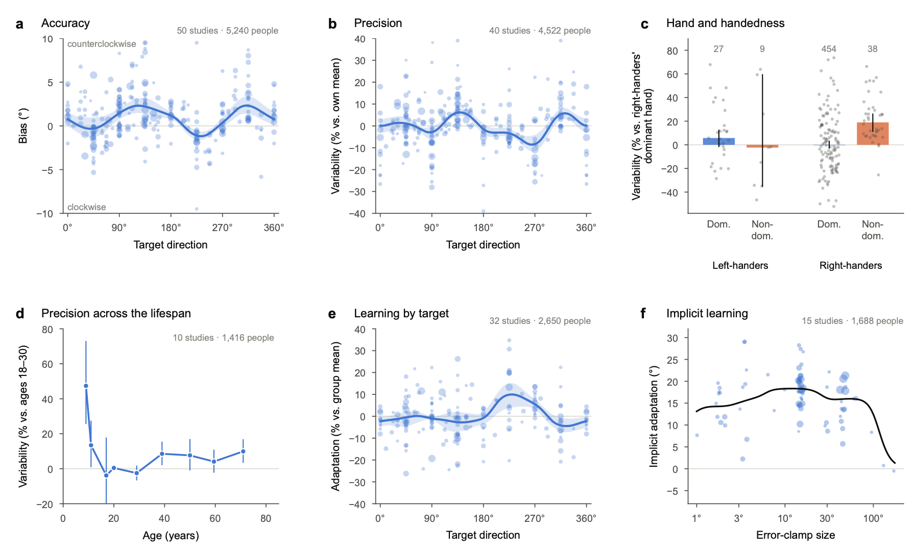

Open data for motor control and motor learning
A collection of publicly available datasets from human motor control and motor learning experiments, organized for easy discovery.
Data Format
The reaching datasets in OpenMotor share one format: one table with one row per trial of one participant, and the same 90 columns in every dataset, so code written for one study runs on every other. The columns are described below and in columns.csv, which comes with every download.
Conventions
Angles
Degrees in the frame of the screen: 0° points right and angles increase counter-clockwise. Hand and cursor angles are measured from the target, so 0 means straight at it. A rotation of +30° puts the cursor 30° counter-clockwise of the hand, and people who adapt to it move their hand clockwise, toward negative angles.
Columns
The 90 columns are grouped by their function in the experiment.
| Column | Type | Values or units | Description |
|---|
Example
Other tasks
| Column | Type | Values or units | Description |
|---|
How to Cite
A paper describing OpenMotor is in preparation. Until it is published, please cite OpenMotor and the original paper for every dataset you use. Each dataset's README gives its citation.
References
The papers for all 97 studies, sorted by first author.
About OpenMotor
OpenMotor is a hub of publicly available datasets from human motor control and motor learning experiments. To browse them, open Studies.
Goal
To make it easier for researchers to find and reuse open motor control and motor learning data. Each study links to the data its authors shared, with the paper, the file format and tags. The data can be used to test new hypotheses, compare and validate models, estimate effect sizes when planning a study, and combine results across studies.
Scope
Any open dataset from human motor control or motor learning research. A dataset is included when:
- the data were collected from human participants,
- the experiment involves a motor control or motor learning task, and
- the data are publicly available.
People
OpenMotor is curated by the Physical Intelligence Lab at Carnegie Mellon University: Jonathan Tsay (principal investigator), Sritej Padmanabhan, and Indranil Nyamsuren.
To add a dataset, use Add your data. For questions or issues, email physical.intelligence.lab@gmail.com.
Add your dataset
Labs can contribute any motor control or motor learning dataset to OpenMotor by sharing their data, citation information, and license details.
Submit a study to OpenMotor
Share your experiment with the community. Upload your data as it is, or link to where you shared it: we list your study with a link to your data, convert it to the OpenMotor format, and check the conversion against your paper.
- 1Upload your dataDrop your trial-level files as they are. No reformatting needed.
- 2Add the detailsThe paper, your lab, and how the data can be shared.
- 3Review & submitSend it to the OpenMotor team. We do the rest.
What you'll need
- Your data, in any layout
- README or study notes
- Citation / paper information
- License information
- Contact email
No reformatting needed: we convert your files for you.
Thank you for contributing to OpenMotor
We received . The OpenMotor team will review it and contact you at .
Do you have another dataset to add?
Review process
After you submit, our team will review your dataset:
Standardization
Standardization is in beta. The format may still change, and mistakes are possible. If you use a standardized dataset, check it against the original data and cite the original paper.
- StudyEach study's data as its authors shared them, in their own layout and kind of file.
- Standardized dataThe same trials in one table, with the same columns, units and conventions in every study.
- InsightsQuestions that span studies: comparing and combining results, and testing models on many experiments at once.
Insights
A first look at what the standardized data can show: we answered six questions by combining many studies at once. The number of studies and people is in each panel.
